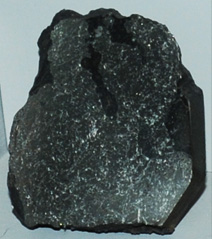

Iron
Pure iron is a bright silvery-white metal which oxidizes (rusts) rapidly in moist air or in water containing dissolved oxygen. It is soft, malleable, and ductile, and is strongly magnetic (ferromagnetic). It is rare to find it in elemental form on the Earth, but the sample at right was found in Greenland. It has also been found in igneous rocks in Russia. |  |
Pure iron has little use - some for analytical chemistry and some in medicine. It is made much more useful by alloying it with other materials.
Adding a small amount of carbon to iron greatly strengthens it, and other useful alloys are made by adding amounts of the transition metals.
Iron is one of the big 8 elements in the Earth's crust, being the fourth most abundant element at about 5% by weight. Iron ore is abundant, but its isolation is an energy-intensive process. The chief ores are the oxides hematite, Fe2O3, and magnetite, Fe3O4, and its carbonate siderite, FeCO3. Iron also forms the oxide minerals lepidocrocite and goethite, each with the general formula FeO(OH). Iron is found with manganese and zinc in the oxide mineral Franklinite.
Iron joins magnesium in the carbonate pyroaurite. Iron pyrite, Fe2S, contains the iron, but it is difficult to isolate from the sulfur. This ore is used as a source for sulfur. A variation on pyrite is called pyrrhotite and the composition is written Fe1-xS. Iron also forms the sulfide marcasite, FeS2. Copper joins iron to form chalcopyrite, CuFeS2. Iron also joins with arsenic to form arsenopyrite, FeAsS. Iron with arsenic forms the mineral loellingite, FeAs2. Iron forms some phosphates like vivianite. Titanium and iron together form the oxide ilmenite, FeTiO3. Chromium and iron together form the oxide chromite, FeCr2O4. Iron forms an oxide mineral with titanium, lead and manganese called senaite. Iron joins in a sulfide with copper and antimony called tetrahedrite. A sulfide with antimony forms the mineral berthierite. Sulfides with copper include bornite, Cu5FeS4, and cubanite, CuFe2S3. A sulfide formed with tin, lead and antimony is called cylindrite. Iron is found in the mineral nagyagite, a sulfide, along with gold, lead, antimony, and tellurium. Tennantite is a sulfide which contains iron, arsenic, copper and antimony. Germanite is a sulfide which contains copper, germanium and iron. Lead, copper and iron join in the sulfide betekhtinite. Cobalt joins with iron and arsenic in the sulfide glaucodot, (Co,Fe)AsS. Zinc and iron form the sulfide wurtzite, (Zn,Fe)S.
A sulfate mineral of iron and potassium is jarosite. Beudantite is a mineral containing iron and lead along with sulfate and arsenate groups, PbFe3(AsO4,SO4)2(OH)6. Iron, along with magnesium, is a constituent of the fibrous silicate minerals which were collectively given the commercial name asbestos. Those minerals include tremolite, riebeckite and grunerite. The abundant iron in the Earth's crust is found in silicate minerals such as andradite.
Graftonite is a phosphate mineral of iron, manganese and calcium. Iron appears with magnesium and aluminum in the phosphate lazulite . Iron, magnesium and manganese form the phosphate mineral ludlamite. A phosphate of iron and aluminum is paravauxite.
Nickel is often found in association with iron and sometimes forms the compound Ni3Fe, called awaruite in its mineral form. Nickel-iron meteorites are fairly common.
Common useful forms of iron alloys are cast iron, wrought iron, and steel.
Wrought iron is made from cast iron by melting it on a bed of iron oxide. The final result is a material which is nearly pure iron, with only 0.1-0.2% of carbon and less than 0.5% of all impurities. The purification occurs because the iron oxide bed oxidizes the carbon to carbon monoxide and the sulfur, phosphorus and silicon to their oxides. These oxides become part of the slag. As the iron becomes purer, its melting point rises and it becomes pasty, signaling the time to remove it from the furnace. The slag is then forced out by hammering.
Wrought iron created by this process is strong and tough and can be welded and forged. Very popular in the past, it has now been largely supplanted by mild steel.
Steel is a purified alloy of iron with carbon which is manufactured in the liquid state. The manufacturing process eliminates almost all of the phosphorus, sulfur, and silicon which exist in common cast iron. The range of carbon content for steels is 0.1 to 1.5%. Low carbon steels (<0.2% carbon) are called mild steels. They are malleable and ductile and are used in place of wrought iron. Medium steels (0.2 to 0.6% carbon) are used for structural steel (beams, girders). Both mild and medium steels can be forged and welded.
High-carbon steels (0.75 to 1.5% carbon) are used for making cutting tools, surgical instruments, drills and other tools. Medium and high-carbon steels can be hardened and tempered.
Iron is crucial to life in that it is present in hemoglobin, the molecule in red blood cells that transports oxygen from the lungs to other body tissue. Iron is also present in myoglobin in the muscles. Myoglobin is similar to hemoglobin and takes oxygen from it, holding the oxygen in the muscle until it is needed. There are iron-containing compounds called cytochromes in the cells where they play a role in the oxidation of food molecules.
|
Index
Periodic Table
Chemistry concepts
Reference
Pauling
Ch. 27 |